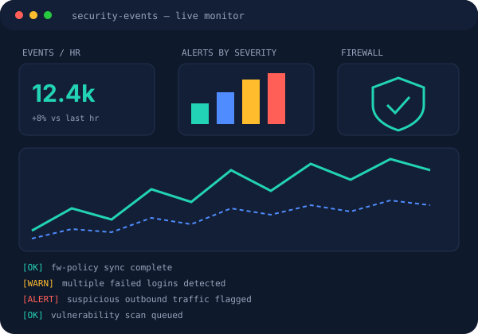
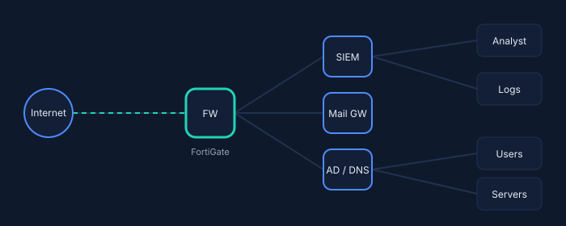

Cybersecurity & SOC
Security monitoring, alert and log review, cyberdefense fundamentals, incident troubleshooting, endpoint security.
> Hello, I'm
Information Security and Forensics graduate with hands-on experience in security monitoring, firewall support, vulnerability assessment and end-user IT support, based in Nairobi, Kenya.

I'm an Information Security and IT graduate with practical exposure to cybersecurity operations, security monitoring, network security, vulnerability assessment and end-user IT support.
During my attachment at the ICT Authority's Information Security Department I monitored enterprise security events in FortiSIEM, assisted with FortiGate firewall administration, ran Acunetix vulnerability scans and supported enterprise email security.
I have a strong foundation in networking, cyberdefense, SOC concepts and ethical hacking fundamentals, backed by labs in Cisco Packet Tracer and Windows Server. I'm interested in cybersecurity training and learner support, and keep growing in areas like cybersecurity automation and AI.

Security monitoring, alert and log review, cyberdefense fundamentals, incident troubleshooting, endpoint security.
FortiGate firewall support, TCP/IP, DNS, DHCP, LAN troubleshooting, VLANs, VPN, routing and switching fundamentals.
Acunetix scanning, system risk identification, ethical hacking and penetration-testing fundamentals.
Windows 10/11, Windows Server, Active Directory, user accounts, password resets, Group Policy fundamentals.
Hardware and software troubleshooting, workstation setup, printers and peripherals, Microsoft Office 365, email configuration.
Structured problem solving, clear communication, attention to detail, teamwork and continuous learning.
eMobilis Technology Training Institute · Nairobi
ICT Authority, Information Security Department · Nairobi

ICT Authority, Huduma Centre · Kisumu
KCA University
KCA University
Koelel High School
I'm open to cybersecurity, IT support and security-training opportunities. References available on request.
📍 Nairobi, Kenya